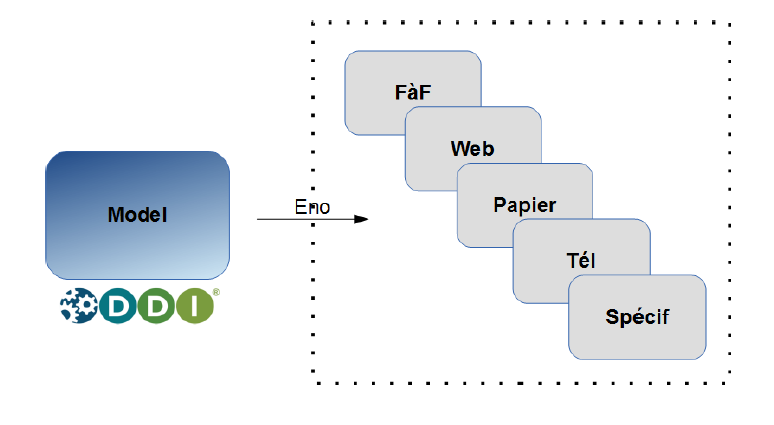
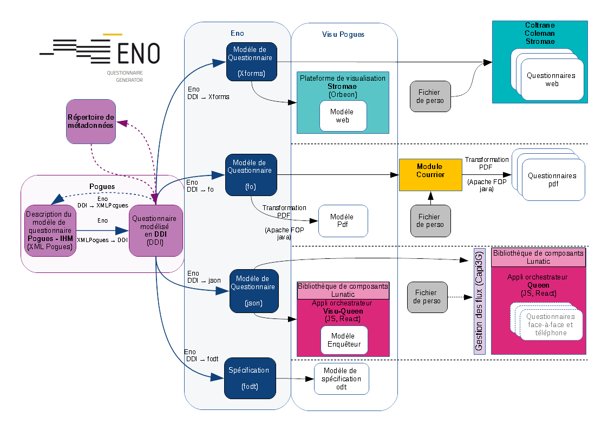
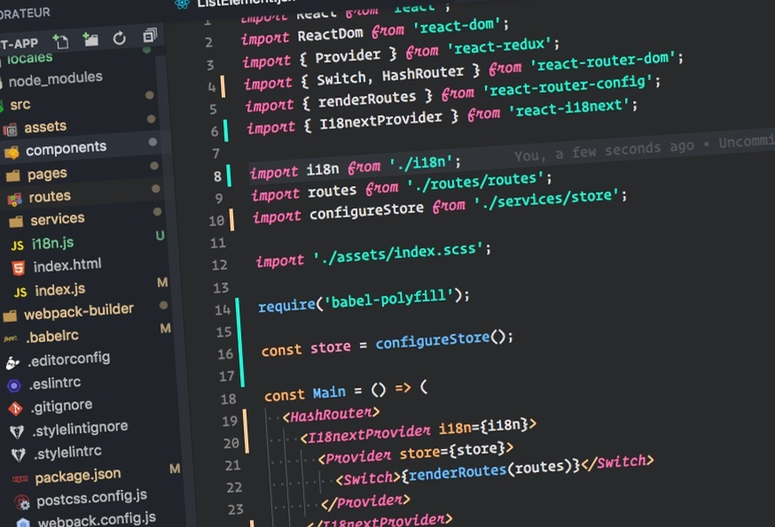

Ensae - Metallica
Sommaire
- Rapide aperçu du projet Métallica
- Directeur de programme, mais encore ?
- Méthodologue, mais c'est quoi ?
- Expert technique, mais c'est bien ?
Le projet Métallica
Métallica c'est quoi ?
Un projet d'industrialisation de la collecte des enquêtes ménagesNon mais pour de vrai, Métallica c'est quoi ?
- Un portail de promotion
- Des outils de gestion, de suivi, de pilotage
- De la génération de questionnaires !
(c'est ça qui est innovant)
Générer des questionnaires à partir de métadonnées
Heu, des métaquoi ?
Allez on sort ses crayons et on note...
Méta, du grec "au-dessus", "sur"
Donc métadonnées = données sur la données, pas compliqué quand même...
Donc je disais...
Générer des questionnaires à partir de métadonnées
Des métadonnées de questionnaires
Une application pour les saisir : Pogues
Un générateur pour produire les questionnaires : Eno
Vis ma vie de...
Directeur de programme
La position
Super chef de projet
Ou sous-maître d'ouvrage
Un job de chef d'équipe
Une équipe métier
qui doit penser, inventer, un nouveau système d'information
Une équipe informatique
qui doit concevoir, construire, un nouveau système d'information
Un job de lobbyiste
Des maîtrises d'ouvrage d'enquête à convaincre
Des partenaires à motiver
Des grands chefs à amadouer
Un job de communicant
Auprès des enquêtes
Leur donner de la visibilité sur le calendrier
Auprès des utilisateurs
Leur donner de la visibilité sur les fonctionnalités, l'ergonomie
Auprès des Djeuns
Leur donner envie de faire pareil
Un job de visionnaire...
(rien que ça...)
Savoir où on va.
Saisir les opportunités, techniques ou organisationnelles.
Prendre les "bons" risques.
Métier
Quel rôle pour un profil métier ?
Eno : un générateur de ... questionnaire
La méthodologie est un domaine plus vaste que la théorie statistique
3 axes de travail sur la méthodologie de conception de questionnaire
- Les mettre en oeuvre
- Les diffuser
Identifier les bonnes pratiques :
Proposer une philosophie Insee en matière de conception de questionnaire
Veille méthodologique, Revue de littérature, Conférences...
Statistique, sciences cognitives, web design, neuro marketing
chercheur
Mettre en oeuvre les bonnes pratiques
Piloter les développements du générateur
Traduire un concept ou une contrainte (par ex la lisibilité d'un questionnaire par un humain ou une machine) en spécifications concrètes
chef de projet
Diffuser les bonnes pratiques
Partager les connaissances, faire des préconisations
Amener le statisticien à sortir de son point de vue d'expert pour adopter celui de Monsieur Toutlemonde
influenceur
Bilan
après 4 années
♪ La transversalité : le début d'une réflexion sur travailler ensemble dans un univers décloisonné
Ma vie d'informaticien à Metallica
09:00
Je boot ma machine, impatient d'en découdre

09:05
Le réseau interne vient de péter, je me crispe ...
09:10
Après un " Whiskey in the Jar", j'étais plutôt "Seek & destroy", mais je me détends pour "Turn the page"
Quel est le programme aujourd'hui ?
09:11
WTF! Là je me sens bien !
Je plonge dans Lunatic, quel kiffe !
Mon SDSI m'a dit : fais simple, modulaire, réutilisable
Bim, je prépare mes petites briques :
ComposantsBim, je les assemble et je fais joujou avec ma spécification
Questionnaire14:00
Pas le temps de manger, je fais une nouvelle librairie
VTL tools18:00
J'ai pissé du code toute la journée, quel bonheur
